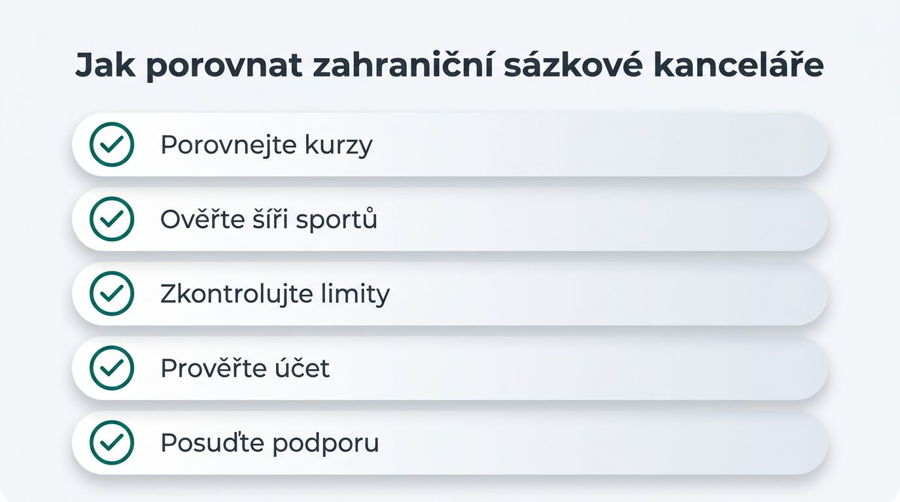
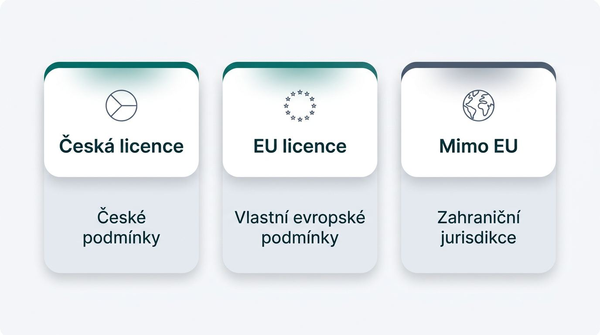
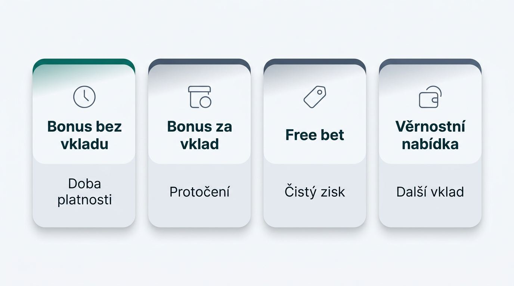
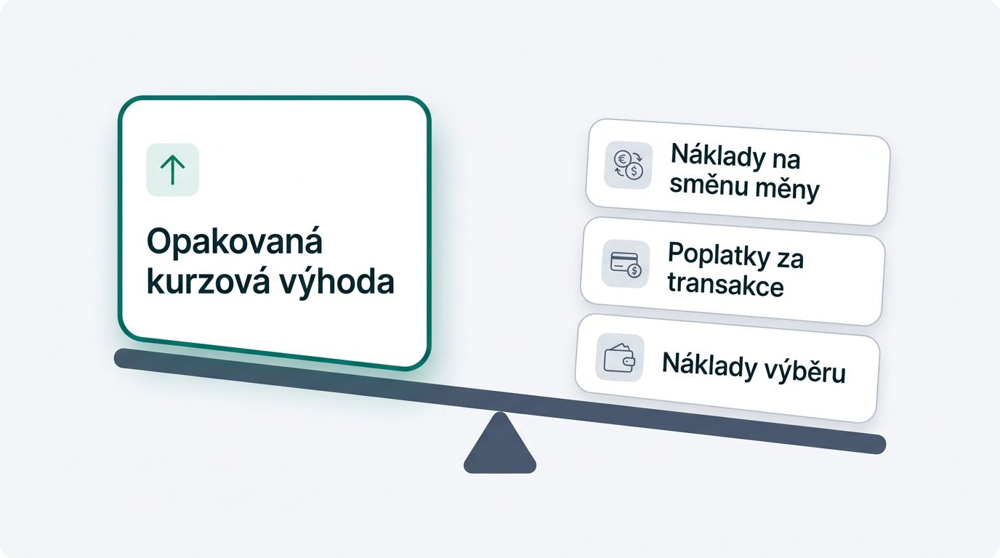
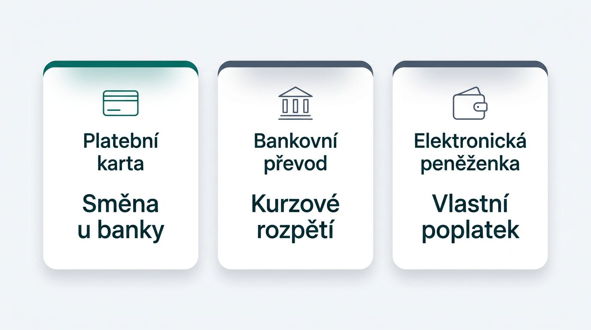

Jak porovnat zahraniční sázkové kanceláře

Dlouhodobou hodnotu účtu určují měřitelné podmínky při opakovaném sázení a výběrech. Srovnání zahraničních sázkových kanceláří proto musí české hráče vést od kurzů a trhů k použitelnosti účtu.
- Porovnejte kurzy na stejných trzích a sledujte jejich vývoj, zejména u sázek, které podáváte opakovaně.
- Ověřte šíři sportů, počet trhů, live sázení a skutečnou funkčnost mobilního rozhraní.
- Zkontrolujte limity sázek, maximální výplaty a podmínky pro omezení účtu.
- Prověřte, zda účet nabízí vedení v korunách, použitelné platební metody a předvídatelný výběr.
- Posuďte rychlost a jazyk podpory při dotazu na ověření, sázku nebo platbu.
Při výběru účtu mají větší váhu opakovaně konkurenceschopné kurzy, dostupné výběry a pravidla účtu než uvítací nabídka. Nejlepší zahraniční sázková kancelář proto závisí na podmínkách, které odpovídají Vašemu způsobu sázení.
Co má spolehlivé srovnání měřit
Důvěryhodné recenze zahraničních sázkových kanceláří stojí na opakovatelném testu a zveřejněných podmínkách. Porovnání musí vycházet ze stejných sportů, typů trhů, výše sázek a času kontroly.
- Porovnávejte totožné kurzy podle sportu, trhu, vkladu a data, protože zvýrazněný kurz sám nevypovídá o běžné cenové hladině.
- Rychlost výběru výhry posuzujte až po dokončeném vkladu i výběru, včetně případných požadavků na dokumenty.
- V mobilním prostředí ověřte podávání sázek, načítání trhů, live režim, Cash Out, Bet Builder a použitelnost plateb.
- V podmínkách sázkových kanceláří hledejte pravidla KYC, výběrů, limitů, zrušených sázek, bonusů a omezení účtu.
- Oddělte vlastní pozorování od tvrzení provozovatele a u každého údaje uveďte, zda vychází z testu nebo z obchodních podmínek.
Výběr podle sázkových priorit
Vhodná sázková kancelář ze zahraničí závisí na podmínkách, kterým při sázení dáváte přednost. Rozhodnutí často vyžaduje kompromis mezi cenou kurzů, sportovní hloubkou, funkcemi během zápasu a každodenní správou účtu.
- Pokud vyhledáváte hokej, biatlon nebo e-sporty, dejte přednost kanceláři s prokazatelně hlubšími trhy před vysokým vstupním bonusem.
- Pokud podáváte stejný typ sázek opakovaně, porovnávejte stabilní kurzy před širokým souborem funkcí, které nevyužijete.
- Pokud sázíte převážně během utkání, ověřte rychlost mobilního rozhraní, dostupnost live trhů a provedení tiketu.
- Pokud chcete omezit směnné náklady, ověřte možnost platby v českých korunách a pravidla pro výběr ve stejné měně.
- Před registrací si přečtěte zveřejněné limity sázek, maximální výplaty a podmínky výběrů.
Právní status a kontrola licence v Česku
Aktuální ověření postavení provozovatele na českém trhu pomáhá posoudit kontinuitu přístupu k účtu i prostředkům před prvním vkladem. Česká licence pro provozování hazardních her opravňuje k poskytování hazardních služeb v České republice a liší se od licence vydané v jiné jurisdikci.
Česká hazardní legislativa vychází ze zákona o hazardních hrách č. 186/2016 Sb. Ten dopadá i na zahraniční provozovatele, kteří přímo nebo nepřímo cílí na osoby s trvalým pobytem v ČR. U každého hodnocení proto ověřte držitele licence, jurisdikci, číslo licence a veřejně doloženou dostupnost. Licencované sázkové kanceláře v ČR a provozovatelé s licencí v zahraničí podléhají rozdílným pravidlům ochrany hráče a řešení sporů.
Kontrola registrů Ministerstva financí: Před vkladem otevřete aktuální seznam legálních provozovatelů hazardních her a seznam nepovolených internetových her vedené Ministerstvem financí České republiky. Teprve poté ověřte údaje uvedené na webu provozovatele. Za legální zahraniční sázkové kanceláře nelze automaticky považovat všechny subjekty s cizí licencí a nelegální sázkové kanceláře mohou čelit omezení přístupu.
Typy zahraničních sázkových kanceláří pro české hráče

Mezinárodní provozovatelé dostupní českým čtenářům fungují v odlišných licenčních a přístupových režimech, což se projeví v podmínkách účtu i kontinuitě služby. Mezinárodní licence pro hazardní hry vydávají zahraniční regulátoři, například Maltese Gaming Authority, UK Gambling Commission nebo Curaçao Gaming Control Board.
| Licenční kategorie | Praktický dopad na účet |
|---|---|
| Sázkové kanceláře s českou licencí | Uplatňují české podmínky provozu, ověření a přístupu. |
| Provozovatelé s licencí v EU bez české licence | Mohou mít vlastní evropské podmínky ochrany a sporů, jejich dostupnost z Česka však vyžaduje samostatné ověření. |
| Zahraniční sázkové kanceláře bez české licence, licencované mimo Evropu | Podmínky účtu, podpory a stížností určuje zahraniční jurisdikce, proto zkontrolujte také kontinuitu přístupu a výběrů. |
Přímé i nepřímé cílení na české rezidenty může ovlivnit praktický status služby. Česká lokalizace nebo zobrazení korun nepotvrzují, že kanceláře s licencí mohou účet v Česku poskytovat za stejných podmínek dlouhodobě.
Jak ověřit dostupnost před registrací
Veřejně ověřitelné údaje zkontrolujte dříve, než zadáte platební kartu nebo odešlete vklad. Údaj na webu provozovatele má menší váhu než informace z registrů, licenčních dokumentů a českých podmínek.
- Ověřte seznam povolených provozovatelů a seznam nepovolených internetových her Ministerstva financí České republiky.
- Zjistěte licencovaný subjekt, číslo licence, jurisdikci a shodu těchto údajů s podmínkami účtu.
- Přečtěte si podmínky určené pro Česko, včetně omezení registrace, vkladů a výběrů.
- Prověřte dostupnost českého rozhraní, zákaznické podpory a podpory korun, aniž byste tyto prvky považovali za důkaz licence.
- Zohledněte, že blokování zahraničních sázkových webů nebo platebních služeb může přerušit přístup k účtu a komunikaci s provozovatelem.
Uvítací bonusy a free bety bez marketingových zkratek

Použitelnou hodnotu uvítací nabídky určuje možnost převést ji na vybratelné prostředky podle podmínek účtu. Bonus za registraci, uvítací bonus za vklad a free bet zdarma fungují rozdílně a každý může omezit způsob sázení i výběr.
| Typ nabídky | Klíčová podmínka pro skutečnou hodnotu |
|---|---|
| Bonus bez vkladu | Ověřte dobu platnosti, minimální kurz a pravidla výběru případné výhry. |
| Bonus za vklad | Zjistěte požadavek na protočení, maximální částku pro výběr a způsobilé platební metody. |
| Free bet | Zkontrolujte, zda se při výhře vrací pouze čistý zisk, nebo také hodnota použité sázky. |
| Věrnostní nabídka | Prověřte, zda vyžaduje další vklad, konkrétní typ tiketu nebo opakovanou aktivitu. |
Podmínky sázkových bonusů obvykle stanovují minimální kvalifikační kurz, lhůtu pro využití a omezení převodu měny. Pokud účet vede zůstatek v cizí měně, směna může snížit částku dostupnou pro sázení i následný výběr.
Podmínky bonusů, které mění jejich skutečnou hodnotu
Pravidla způsobilosti mohou rozhodnout o vhodnosti bonusu ještě před první kvalifikační sázkou. Částka uvedená v reklamě nestačí k rozhodnutí bez kontroly omezení sportů, plateb a výběru.
- Způsobilé sporty, soutěže a trhy určují, zda bonus využijete pro své obvyklé sázky.
- Vyloučené platební metody mohou znemožnit aktivaci nabídky po provedeném vkladu.
- Minimální kurz a požadovaný počet událostí na tiketu omezují volnost při sestavování sázek.
- Limit konverze určuje nejvyšší částku, kterou lze z bonusových prostředků převést k výběru.
- Pravidla pro zrušení bonusu nebo omezení účtu se uplatní při porušení podmínek či neobvyklém využití nabídky.
- Free spiny mohou patřit k nabídce her v casinu, jejich hodnota se proto neposuzuje jako prostředek pro sportovní sázky.
Kurzy, sportovní nabídka a výhody live sázení
Sázkové marže ovlivňují hodnotu každé podané sázky a hloubka trhu určuje, zda nabídka pokryje konkrétní soutěž. Marže sázkové kanceláře představuje rozdíl mezi souhrnem pravděpodobností vyjádřených kurzy a férovým oceněním trhu, který se promítá do dlouhodobé ceny sázení.
Kurzy sázkových kanceláří porovnávejte na shodných trzích. Žádný mezinárodní provozovatel nenabízí nejvýhodnější ocenění ve všech sportech a situacích. Velké akce, jako mistrovství Evropy či světa ve fotbale nebo zimní olympijské hry, mohou rozšířit speciální trhy, změnit marže a přinést časově omezené nabídky.
- U českého fotbalu sledujte počet trhů na zápas, dostupnost sestav a rychlost změn před výkopem.
- U domácího i mezinárodního hokeje porovnejte trhy na třetiny, střelce, handicap a průběžný vývoj utkání.
- U biatlonu a tenisu ověřte, zda nabídka zahrnuje kvalifikace, nižší soutěže a sázky během závodu či setu.
- U e-sportů posuďte šíři trhů na mapy, kola a další časově citlivé možnosti.
- Při live sázení hodnotíte Cash Out, Bet Builder a mobilní provedení podle stability kurzů, načítání trhů a spolehlivosti potvrzení tiketu.
Kdy lepší kurzy vyváží náklady na účet

Vyšší kurz má hodnotu tehdy, když jeho opakovaný přínos převýší směnný rozdíl, bankovní poplatky a obtíže při výběru. Porovnávejte stejné události, trhy i podmínky zápasu místo jednoho nápadného kurzu mezi různými sázkovými kancelářemi.
Praktické pravidlo je následující.
opakovaná kurzová výhoda > náklady na směnu měny + poplatky za transakce + náklady výběru
- Sledujte marži u více zápasů stejného sportu a typu sázky.
- Započítejte kurzové riziko při převodu CZK na EUR nebo jinou měnu.
- Ověřte poplatky banky či platebního poskytovatele, které mohou snížit čistý výnos.
- Opakujte kontrolu během několika dnů, abyste odlišili stabilní cenotvorbu od krátké propagační nabídky.
Live sázení, Bet Builder a mobilní použitelnost
Při live sázení rozhoduje stabilita kurzů, hloubka trhů a potvrzení tiketu v okamžiku rychlé změny. Mobilní prostředí musí umožnit rychlý krok bez opožděného načítání nebo neprovedené sázky, protože čeští uživatelé často sázejí právě z telefonu.
- Sledujte, jak rychle se aktualizují live kurzy u tenisu, hokeje, e-sportů a mikrosázek.
- Ověřte, zda se trhy při změně skóre pouze krátce uzavírají, nebo zůstávají dlouho nedostupné.
- Cash Out posuďte podle toho, zda nabízí použitelnou částku a zda požadavek projde během události.
- Bet Builder vyzkoušejte na reálném tiketu, zejména rychlost výběru trhů a přepočtu kurzu.
- Aplikaci nebo progresivní webovou aplikaci hodnoťte podle navigace, načítání trhů a práce se sázkovým tiketem.
Vklady, převod měny, výběry a ověření účtu
Skutečná hodnota mezinárodního účtu se ukáže na celé cestě peněz od vkladu v korunách po dokončený výběr. Kurz měny, poplatky, KYC ověření i AML kontrola mohou změnit čistý výsledek také u platební cesty, která se na první pohled jeví levně.
Převod měny znamená směnu korun na měnu vedenou na účtu. KYC ověření je kontrola totožnosti zákazníka a AML kontrola slouží k ověření původu prostředků a předcházení praní peněz. Přímý poplatek za transakci se liší od kurzového rozpětí, které může účtovat banka, platební poskytovatel nebo provozovatel.
- Před vkladem zjistěte, zda účet přijímá platbu v českých korunách a v jaké měně vede zůstatek.
- U vkladu ověřte poplatek, použitý směnný kurz a možnost výběru stejnou platební metodou.
- Před vyšším vkladem dokončete ověření identity u sázkové kanceláře, abyste neřešili doklady až při výběru.
- Při žádosti o výběr zkontrolujte minimální částku, limity, dobu zpracování a případnou další směnu měny.
- Do očekávané čisté výplaty zahrňte také zdanění výher ze sázek podle Vaší konkrétní situace.
- Počítejte s tím, že omezený přístup k doméně může zkomplikovat správu účtu nebo komunikaci.
Platební metody a skutečná cena cizí měny

Platební metoda s nulovým deklarovaným poplatkem nemusí být nejlevnější, pokud používá nevýhodný kurz, zpracovává platbu pomalu nebo neumožní výběr. Před financováním online účtu porovnejte náklady, rychlost, kompatibilitu výběru a skutečnou dostupnost pro účet vedený z Česka.
| Kategorie platební metody | Náklady a směna | Výběr a spolehlivost |
|---|---|---|
| Platební karta | Směna může proběhnout u banky nebo provozovatele. | Často použitelná pro vklad, výběr ověřte předem. |
| Bankovní převod | Kurzové rozpětí a zpracování banky mohou zvýšit cenu. | Vhodnost závisí na měně účtu a pravidlech příjemce. |
| Elektronická peněženka | Může přidat vlastní poplatek za směnu či převod. | Ověřte shodu jména a možnost výběru na stejný účet. |
| Další dostupné metody | Podmínky se liší podle země, měny a poskytovatele. | Regionální omezení mohou metodu pro český účet vyřadit. |
České banky a platební instituce mohou odmítnout transakci související s hazardem podle vlastních pravidel, nastavení karty nebo posouzení příjemce. Kontrolujte proto podmínky vkladu i výběru dříve, než odešlete peníze.
KYC a AML kontrola před prvním výběrem
Včasné dokončení ověření totožnosti zvyšuje připravenost účtu na výběr a snižuje riziko zbytečného zdržení. AML kontroly mohou při vyšší aktivitě vyžadovat další doklady o zdroji prostředků, a to podle pravidel provozovatele a jeho licence pro hazardní hry.
- Při registraci uvádějte údaje shodné s doklady a platební metodou.
- Připravte platný doklad totožnosti a doklad o adrese, pokud jej provozovatel vyžaduje.
- Ověřte, že jméno na platební kartě, bankovním účtu či elektronické peněžence odpovídá údajům v účtu.
- Při vyšších obratech mějte k dispozici podklady k původu peněz.
- Dokončete kontrolu ještě před prvním výběrem, protože neúplné ověření může prodloužit rychlost výběru výhry.
Přísnost ověřování sama o sobě neurčuje kvalitu služby, rozhodující je srozumitelný postup a předvídatelné požadavky.
Limity sázek, úspěšné účty a dlouhodobé podmínky
Dlouhodobou vhodnost účtu ukazují zveřejněné limity, maximální výplaty a pravidla pro omezení účtu. Limity se mohou měnit podle sportu, trhu, času podání, likvidity i historie účtu.
Nejlepší zahraniční sázková kancelář pro pravidelné sázení proto zveřejňuje podmínky dostatečně konkrétně, aby bylo možné odhadnout použitelnost účtu i po delší době.
- Prověřte maximální povolenou výplatu pro jednu sázku, soutěž i účet.
- Zjistěte, zda podmínky připouštějí snížení limitů sázek, omezení bonusů nebo uzavření účtu.
- Při sázení u zahraničních sázkových kanceláří počítejte s rozdílnými limity podle trhu a načasování.
- U soustavně úspěšného sázení může provozovatel upravit dostupné vklady či trhy, podmínky však neurčují stejný výsledek pro všechny účty.
- Arbitráž a hledání hodnotných kurzů mezi českými a zahraničními sázkovými kancelářemi vyžadují průběžnou kontrolu limitů i pravidel zrušení sázek.
Bezpečnost účtu, ochrana dat a řešení problémů
Důvěru před vkladem vytváří dohledatelný držitel licence, transparentní pravidla účtu, podmínky výběru, funkční podpora a srozumitelná ochrana dat. Preventivní kontrola Vám umožní posoudit bezpečné zahraniční sázkové kanceláře dříve, než nastane spor o peníze, tiket nebo přístup.
- Ověřte licencovaný subjekt, jurisdikci a kontaktní údaje, které lze dohledat mimo samotný web.
- Přečtěte pravidla výběru, zrušených sázek, bonusů a komunikace při omezení účtu.
- Vyzkoušejte podporu konkrétním dotazem, například na dokumenty, výběr nebo pravidla hazardní hry.
- V zásadách ochrany osobních údajů zjistěte, zda data ukládají v EU nebo mimo EU a s jakými třetími stranami je mohou sdílet.
- Šifrování SSL chrání přenos dat, nenahrazuje však jasné podmínky účtu ani dostupný postup pro reklamaci.
Ochrana hráčů zahrnuje také možnost porozumět pravidlům v jazyce, který zvládnete použít při řešení problému.
Co dělat při sporu o výběr, sázku nebo přístup k účtu
Nejsilnější podklad pro řešení problému tvoří uchované doklady a písemně zdokumentovaná stížnost. Zajistěte důkazy dříve, než začnete s provozovatelem řešit zadržený výběr, zrušenou sázku nebo omezený přístup.
- Uložte potvrzení transakcí, tikety, snímky obrazovky, komunikaci a verzi podmínek platnou v době problému.
- Pošlete reklamaci přes formální kanál s jasným popisem požadavku a číslem účtu či transakce.
- Pokud odpověď nevyřeší spor, využijte postup pro stížnost u regulátora nebo mimosoudní řešení sporů v příslušné licenční jurisdikci.
- Přerušení domény nebo platební brány může ztížit přístup i komunikaci, proto uchovávejte kontakty mimo účet.
Ministerstvo financí varuje před nepovolenými internetovými hrami, proto sledujte aktuální informace i při řešení přístupu k účtu.
Nástroje zodpovědného hraní před otevřením účtu
Dostupnost a snadná aktivace limitů si zaslouží kontrolu ještě před registrací, protože ovlivňuje každodenní kontrolu sázení. Kvalitu nástrojů určuje viditelnost v účtu, jednoduchost nastavení a rychlost účinku.
- Ověřte limity vkladu, prohry, sázky a herní relace.
- Zjistěte dostupnost přestávky ve hře, sebevyloučení, upozornění na čas a historie aktivity.
- Prověřte, zda sebeomezující opatření platí ihned nebo až po určité lhůtě.
- Rejstřík vyloučených osob má pro české čtenáře praktický význam u provozovatelů cílících na Česko, jeho dosah však nelze automaticky vztáhnout na všechny zahraniční subjekty.
- Ministerstvo financí vyžaduje, aby provozovatelé s českou licencí zohledňovali registr vyloučených osob.
Časté otázky o zahraničních sázkových kancelářích
Následující odpovědi řeší užší pravidla používání účtu, která doplňují hlavní srovnávací kritéria.
Je používání VPN u zahraniční sázkové kanceláře povoleno?
VPN posuzujte podle aktuálních podmínek provozovatele a pravidel přístupu z České republiky. Při sázení u zahraničních provozovatelů může VPN porušit geografická omezení nebo pravidla účtu.
Mohu mít u jedné zahraniční sázkové kanceláře více účtů?
Více účtů bývá omezeno podmínkami provozovatele a ověřením totožnosti hráče. Duplicitní účet může ovlivnit bonus nebo vést k omezení účtu podle zveřejněných pravidel.
Kdy může sázková kancelář zrušit již přijatou sázku?
Sázková kancelář může sázku zrušit podle house rules při zjevné kurzové chybě, změně či neplatnosti výsledku nebo porušení podmínek. Před podáním sázky zkontrolujte pravidla a uchovejte tiket.